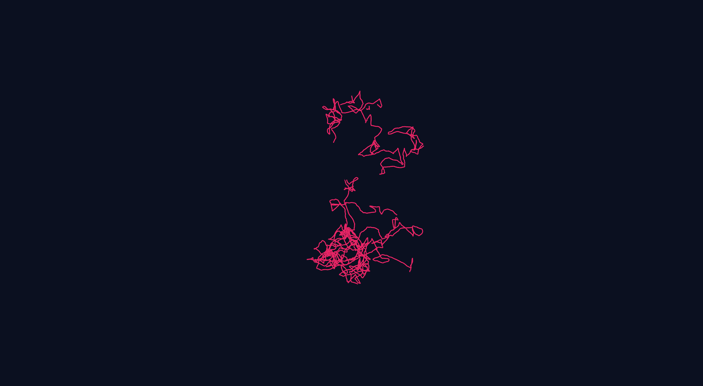
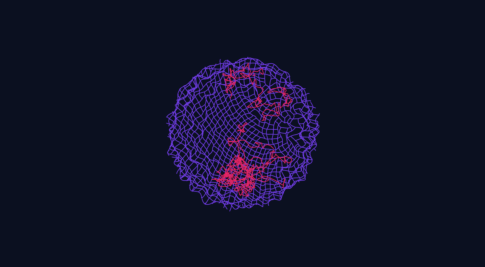
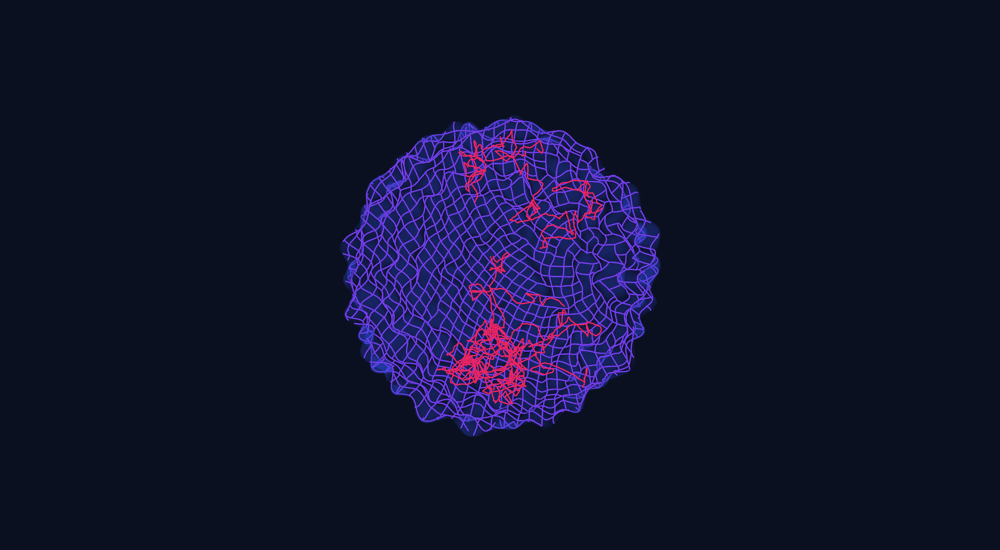
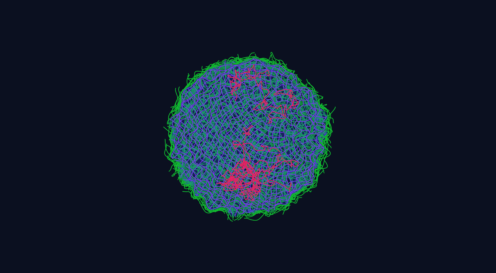
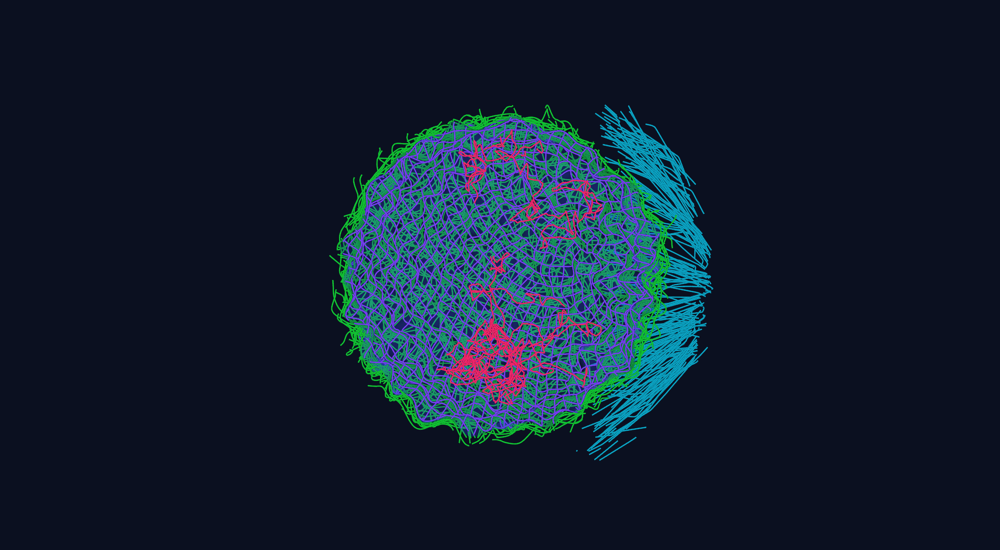
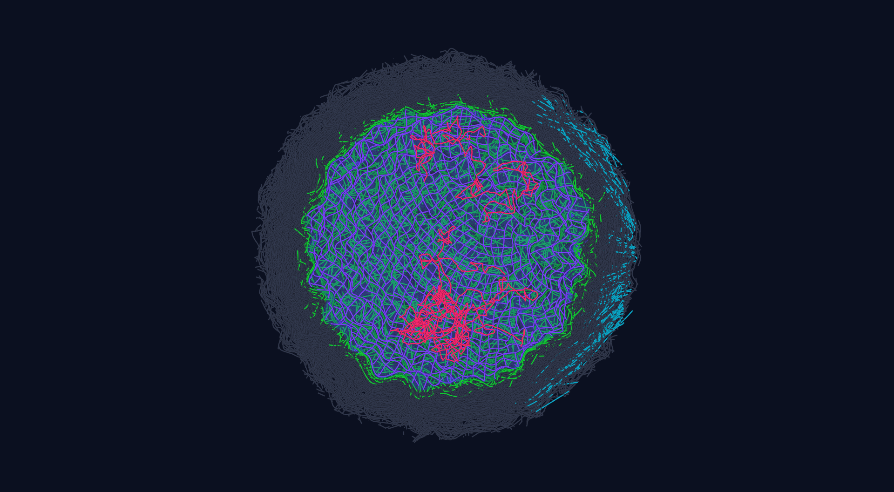
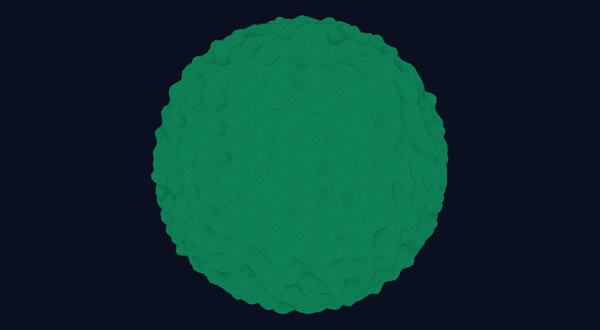
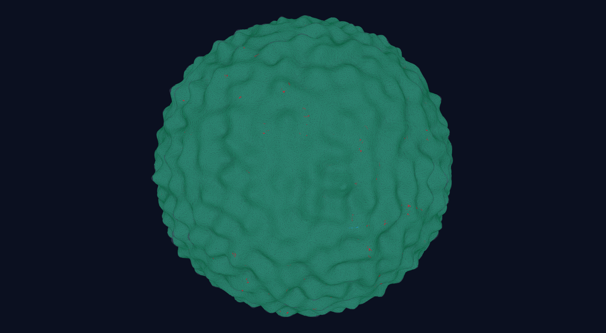
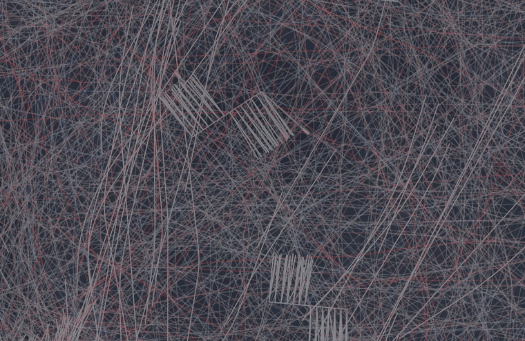
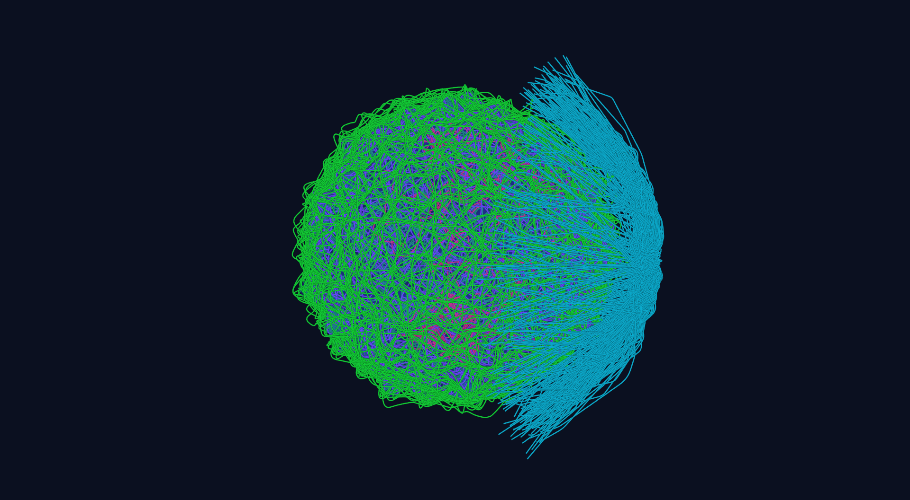

A mini cell with microvilli, after 100 steps (1 s; 1.5 M nodes)cortex actinmembranenuclear envelopelaminachromatinmyosin IImicrotubulesintermediate filamentscytoplasmic actinmicrovillicargobranched cortex actin (Arp2/3)Preview run · not yet a resultFORCE-ACCEPTED, 10 Newton/step: 10 solver iterations a step, not a forceSmaller test cellSourceRecord flicker_mv_ka_mini_20260926_053300_f1ecaee15, commit f1ecaee15, step 100; FORCE-ACCEPTED (10 Newton/step, median over its 100 steps; residual median 3.25e+03 pN); every saved frame passes the containment audit (C2's showcase). Drawn by the Aleph studio from the record's saved arrays; nothing was simulated for the picture. The lighting, shadows and see-through surfaces are display settings, not measured optics. Studio commit c28ea6f3c. Every node, segment and relation of that step, drawn by family: the order the families appear in, the layers taken away per story step, the camera and a 5-pixel cap on a node's drawn size are ours; the positions are the record's.
The full-size cell (7.5 M nodes, step 150; microvilli were off in this run)chromatinlaminanuclear envelopeintermediate filamentsmicrotubulescytoplasmic actincortex actinmyosin IImembranerelations, on their own step:ERM tethersα-actinincrossbridgesnuclear and centrosome tieskinesin and dyneinfilaminPreview run · not yet a resultFORCE-ACCEPTED, 10 Newton/step: 10 solver iterations a step, not a forceFull-size cellSourceRecord qs_long_bt_nogrowth_20260925_040000_b496c1527, commit b496c1527, step 150; FORCE-ACCEPTED (10 Newton/step). Shown: every node and every bond of the record, 7,545,137 nodes and 5,933,348 bonds, with the nuclear envelope and the membrane drawn as their 1,638,400 triangles (34 MB). The build-up animation is ours; every position and bond is the record's.
One cell. Every instrument. Why they disagree.
7,545,139 nodes in the full simulated cell
58 physical laws
632 inputs, 48 from the literature so far; the rest are placeholder values








Chromatin
The same simulated cell in 3-D, assembled from the inside out: each picture adds one family of parts (cut open through the nucleus up to the cytoskeleton). Full-size run b496c1527, step 150; FORCE-ACCEPTED (10 Newton/step).
Scroll to take the simulated cell apart, from the outside in.
1 of 10
A whole cell
In a real cell
A cell is a soft machine about 15 µm across. It keeps its shape with a thin skin of actin and myosin under the membrane, a pressurised interior, and a large, stiff nucleus.
In Aleph
Aleph builds one such cell, an MCF7 breast-cancer cell, out of 7.5 million nodes. Every node has a mass and a radius and follows the same laws. What makes a group of nodes a filament, a membrane or a motor is only how they are connected.
A drawing, not simulation output.
The full simulated cell in 3-D: the whole cell
cortex actin, seen through the membrane
membrane (see-through)
A recorded full-size model. The run conditions and solver status are named in its source record.Source
Record
qs_long_bt_nogrowth_20260925_040000, last saved frame (step 150)
The plasma membrane is a lipid sheet that bends easily but barely stretches. Cells keep spare membrane folded into wrinkles and microvilli and unfold it when they swell or spread.
In Aleph
The membrane is a closed surface of nodes joined into triangular faces. Each face carries tension, the enclosed volume sets a pressure, and each shared edge resists bending. The spare area is built in as wrinkles and microvillus tubes.
The full simulated cell in 3-D: the whole cell
cortex actin, seen through the membrane
membrane (see-through)
A recorded full-size model. The run conditions and solver status are named in its source record.Source
Record
qs_long_bt_nogrowth_20260925_040000, last saved frame (step 150)
Commit
b496c1527
For modelers: the physical laws here and how each is checked
Membrane tension and area lawChecked against theory on the GPU
Rung 5 (reduced icosphere, 2,562 nodes, device): Laplace relaxation matches the exponential oracle to six digits. Native passive record: the two-sided area law holds A/A₀ within its bound at the final iteration.
Known limit. The hinge-sum identity misses by 3.5 %; at 310 K the fluctuation spectrum is far off and the surface degenerates at every tested dt; the κ→κ̃ mapping is under review.
How it was checked
Rung 5: the Y_lm Hessian eigenvalues follow the Helfrich spectrum for l = 2…10.
Enclosed volume and pressureChecked against theory in a code test
Ezrin, radixin and moesin proteins (ERM) tie the membrane to the actin cortex underneath. Where too few are bound, the membrane lifts off and forms a bleb.
In Aleph
Each ERM tether is a relation between one membrane node and one cortex node. It binds and unbinds at rates that depend on how hard it is pulled.
The full simulated cell in 3-D: the edge of the cell: membrane, cortex and ERM tethers
membrane
cortex actin
ERM tethers
A recorded full-size model. The run conditions and solver status are named in its source record.Source
The motion is the record's 15 saved steps (k = 10 to 150) at 3 frames a second, nothing in between. Every step is FORCE-ACCEPTED (10 Newton/step): what the solver reached in the iterations it had. This figure is not a physics conclusion. Loop commit dfba18644.
Record
qs_long_bt_nogrowth_20260925_040000, last saved frame (step 150)
Commit
b496c1527
For modelers: the physical laws here and how each is checked
The cortex is a mesh of actin filaments about 0.2 µm thick under the membrane. It gives the cell most of its surface tension and is rebuilt all the time by two machines: formins grow long filaments, and the Arp2/3 complex grows short branches.
In Aleph
Formin filaments and Arp2/3 branches are laid at their measured share of the actin. Each filament is a chain of nodes held at exact length that resists bending; each branch is held to its mother at 70°.
The full simulated cell in 3-D: the cortex shell, from outside
cortex actin
chromatin (inside, hidden)
A recorded full-size model. The run conditions and solver status are named in its source record.Source
Record
qs_long_bt_nogrowth_20260925_040000, last saved frame (step 150)
Commit
b496c1527
For modelers: the physical laws here and how each is checked
Known limit. The angular stiffness implies a 26° spread against a measured 7–9°; the debranch row is a loaded rate (literature pass, 2026-09-25, under PI review).
Myosin II motors gather into small bipolar bundles, minifilaments, that pull actin filaments past each other. This makes the cortex contract and gives it active tension.
In Aleph
Each minifilament is an object made of nodes: backbone, arms and heads. Every head binds an actin node, makes a power stroke that steps it along the filament, and lets go at a rate set by the load it carries.

The full simulated cell in 3-D: myosin motors in the cortex, close up
comb-like fans: myosin minifilaments
threads: actin, red stretched, blue squeezed
A recorded full-size model. The run conditions and solver status are named in its source record.Source
Record
qs_long_bt_nogrowth_20260925_040000, last saved frame (step 150)
Commit
b496c1527
For modelers: the physical laws here and how each is checked
Known limit. No velocity is claimed (seed scatter); the stroke uses a Bell stall, not a Hill force–velocity; ATP-rate rows are under literature review.
How it was checked
Rung 4b: the cell's own NMII minifilament between two free actin filaments at 310 K — heads bind over 3 s and the pair slides; reversing the stroke sign reverses the slide.
Rate-table kineticsChecked against theory on the GPU
Cross-linking proteins tie actin filaments into a network. α-actinin holds nearby filaments together and slips off under force; filamin makes flexible joints and holds on longer under moderate force.
In Aleph
Each linker is a relation between two filament nodes with its own binding and unbinding: a slip bond for α-actinin, and a bond with two ways to let go for filamin.
The full simulated cell in 3-D: linkers in the cortex
α-actinin linkers
filamin linkers
cortex actin
A recorded full-size model. The run conditions and solver status are named in its source record.Source
The motion is the record's 15 saved steps (k = 10 to 150) at 3 frames a second, nothing in between. Every step is FORCE-ACCEPTED (10 Newton/step): what the solver reached in the iterations it had. This figure is not a physics conclusion. Loop commit dfba18644.
Record
qs_long_bt_nogrowth_20260925_040000, last saved frame (step 150)
Commit
b496c1527
For modelers: the physical laws here and how each is checked
α-actinin crosslinkChecked against theory in a code test
Bell-slip linker between cortex filaments.
\[k_{off}=k_{off,0}\,e^{fx_\beta/k_BT}\]
Known limit. Parameters are skeletal-muscle α-actinin; the cell's pool is mostly ACTN4, a catch bond (under PI review).
How it was checked
Native settle: 96.17 % bound ∈ [95, 99] %.
Filamin catch–slipChecked against theory in a code test
Between the cortex and the nucleus lies a looser actin network and a cage of intermediate filaments. Together they hold organelles in place and resist large deformations.
In Aleph
The cytoplasmic actin and the intermediate-filament cage are chains of nodes laid at their densities, with the same stretch and bending laws as every other filament.
The full simulated cell in 3-D: cut open: the cytoskeleton around the nucleus
cytoplasmic actin
intermediate filaments
microtubules
lamina
chromatin
A recorded full-size model. The run conditions and solver status are named in its source record.Source
Record
qs_long_bt_nogrowth_20260925_040000, last saved frame (step 150)
Commit
b496c1527
For modelers: the physical laws here and how each is checked
Cytoplasmic actinBuilt, not yet checked
A volume network between nucleus and cortex.
\[\rho_L\cdot V_{cyto}\]
How it was checked
Build census.
Intermediate-filament cageBuilt, not yet checked
A perinuclear IF network.
\[k=E\pi r^2/\ell_0\]
How it was checked
Build census.
Axial stretchChecked against theory on the GPU
Every two-node segment resists a change of length.
Known limit. At usable implicit timesteps the axial fluctuation is wrong (+357 % at dt 1e-5); most actin and MT rows run under the length constraint instead.
How it was checked
Rung 1 (reduced scene: 64 chains × 100 segments, device, 2026-08-29): the axial fluctuation ⟨(ℓ−ℓ₀)²⟩ = k_BT/k matches at the explicit control (4.899e-9 vs 4.864e-9 µm²).
Microtubules are stiff hollow tubes that radiate from a centre next to the nucleus. Kinesin walks toward their outer ends and dynein toward the centre, both carrying cargo.
In Aleph
Microtubules are chains of nodes from one organising centre, with ends that grow and shrink. Kinesin and dynein are walking relations that step along them and let go under load.

The full simulated cell in 3-D: microtubules fanning from their organising centre, which sits beside the nucleus, 6.1 µm from the cell centre (seen from the side)
microtubules and their organising centre
cargo
intermediate filaments
nuclear envelope
lamina
chromatin
A recorded full-size model. The run conditions and solver status are named in its source record.Source
Record
qs_long_bt_nogrowth_20260925_040000, last saved frame (step 150)
Commit
b496c1527
For modelers: the physical laws here and how each is checked
Microtubule asterBuilt, not yet checked
Radial microtubules from one MTOC.
\[k_{hub}=EA/r_{MTOC}\]
How it was checked
Build census.
Microtubule dynamic instabilityChecked against theory in a code test
Growing and shrinking plus ends.
\[\pi_{grow}=\frac{f_{res}}{f_{res}+f_{cat}}\]
Known limit. No device record.
How it was checked
Host mirror: the growing fraction ±0.03; the drift sign follows Dogterom–Leibler.
Kinesin and dyneinChecked against theory in a code test
Two-state walkers on microtubules, sliding and cargo.
The nucleus is the largest and stiffest organelle. A double membrane sits on a mesh of lamin filaments, chromatin fills the inside, and LINC proteins connect it to the cytoskeleton.
In Aleph
The envelope is a closed, wrinkled surface with its own tension, volume and bending. The lamina and the chromatin are node networks tied to it and, through LINC, to the cytoskeleton.
The full simulated cell in 3-D: the nucleus
nuclear envelope
lamina
chromatin
A recorded full-size model. The run conditions and solver status are named in its source record.Source
The motion is the record's 15 saved steps (k = 10 to 150) at 3 frames a second, nothing in between. Every step is FORCE-ACCEPTED (10 Newton/step): what the solver reached in the iterations it had. This figure is not a physics conclusion. Loop commit dfba18644.
Record
qs_long_bt_nogrowth_20260925_040000, last saved frame (step 150)
Commit
b496c1527
For modelers: the physical laws here and how each is checked
Nuclear envelope (single sheet)Built, not yet checked
Everything in a cell moves through water. At this scale water behaves like thick syrup (Stokes flow) and pushes back on every moving part, while its molecules keep every part jiggling.
In Aleph
Aleph solves one Stokes flow for the whole box, inside and outside the cell, coupled to every node. Drag is not put in by hand: it comes from the flow each node creates. Every node also gets random kicks from the water, and no node may pass through a surface.
The full simulated cell in 3-D: the whole cell
cortex actin, seen through the membrane
membrane (see-through)
A recorded full-size model. The run conditions and solver status are named in its source record.Source
Record
qs_long_bt_nogrowth_20260925_040000, last saved frame (step 150)
Commit
b496c1527
For modelers: the physical laws here and how each is checked
Stokes solventChecked against theory in a code test
Known limit. Rung 6's B2 row failed (its band was later retired); the grid double-counts the near field (B5 2.41 vs 2.68).
How it was checked
Rung 6 (device, 2026-09-01) and a five-box series: r_eff/dx extrapolates to 1.2537 vs Bringley–Peskin 1.255 (0.10 %); MAC and collocated grids agree to 0.03–0.15 %.
Slender-body dragChecked against theory on the GPU
An instrument touches the cell's surface. In the same runs, most of that surface moves a few nanometres while the inside moves hundreds of nanometres to microns. Four views of the smaller test cell, drawn from every saved step: two interior views and two close-ups of movement beneath the membrane.
Preview run · not yet a result FORCE-ACCEPTED (10 Newton/step) cell sitting free (flicker run)
2 µm
membranenuclear envelopemicrotubulescargo
Cargo among the microtubules
Only the microtubules and the 128 cargo nodes are drawn, inside the see-through membrane and nuclear envelope. A cargo is one node, 60 nm in radius, that a kinesin or a dynein can bind to a microtubule and pull. In this run few are held at any moment, so what you see is mostly cargo wandering, not transport along the tracks.
Median distance moved from the first to the last saved step (0.99 s simulated): cargo 3.0 µm, microtubules 180 nm, the cell membrane 3.8 nm.
Cargo held by a motor: 6, 6, 8 and 14 of 128 at steps 25, 50, 75 and 100, the steps whose relations were saved.
A cargo's path is a random walk: about 49 µm of path for 3.0 µm of net travel, and its mean-square displacement grows almost in proportion to time (exponent 0.85). How fast cargo spreads here has not been compared with measurements in cells.
Drawn by the Aleph studio from the record's saved arrays; nothing was simulated for the picture. The lighting, shadows and see-through surfaces are display settings, not measured optics. Every saved step (one per 0.01 s simulated), positions interpolated between them for display. Motor relations are not drawn: this record keeps them only every 25 steps. Nothing is magnified and the camera does not move.
FORCE-ACCEPTED (10 Newton/step): each step is what the solver reached in its 10 iterations, not a balanced state. A preview run of the smaller test cell (1.5 M nodes), not yet a result.
Source
Record
flicker_mv_ka_mini_20260926_053300_f1ecaee15
Commit
f1ecaee15
Motor binding is read only at the four steps whose relations were saved, so the cargo is not marked by whether a motor holds it.
Preview run · not yet a result FORCE-ACCEPTED (10 Newton/step) pressed between two plates
While two plates press the cell, the chromatin, the lamina and the intermediate-filament cage keep moving inside the see-through nuclear envelope. The chromatin moves a median 182 nm over the run; the cell membrane, 3.6 nm.
Median distance moved over 0.44 s simulated: chromatin 182 nm, intermediate filaments 148 nm, lamina 8 nm, the cell membrane 3.6 nm.
Chromatin and filament nodes move as a random walk (mean-square displacement in proportion to time, exponent 1.0), the pattern thermal jostling gives. How much of it the plates add is not separated in this run.
Drawn by the Aleph studio from the record's saved arrays; nothing was simulated for the picture. The lighting, shadows and see-through surfaces are display settings, not measured optics. The lamina's vertex nodes (0.23 µm in radius in the record) are drawn no wider than 5 pixels, so the chromatin behind them shows. Every saved step (one per 0.01 s simulated), interpolated between them for display. Nothing is magnified and the camera does not move.
FORCE-ACCEPTED (10 Newton/step): each step is what the solver reached in its 10 iterations, not a balanced state. A preview run of the smaller test cell (1.5 M nodes), not yet a result.
Source
Record
plate_mv_mini_20260926_002500_c80b71d50
Commit
c80b71d50
The plates, the cortex and the other parts are in the record but not drawn here.
Recorded motion · 12.5× slower Thermal preview · 310 K
0.2 µm
membranecortex actinbranched cortex actin (Arp2/3)myosin II
Myosin moves beneath the cortex
A 0.7 µm-wide patch of the cell reveals myosin arms and heads beneath the cortical network. The camera stays still while the recorded molecules move, with the membrane made transparent to expose the layers.
Follow the red myosin against the green actin. The 79 heads active throughout this patch move a median 75 nm from first to last saved frame.
Over 0.99 s of recorded time, those heads travel a median 1.12 µm in total: repeated movement, not 1.12 µm of one-way transport.
Drawn by the Aleph studio from the record's saved arrays; nothing was simulated for the picture. The lighting, shadows and see-through surfaces are display settings, not measured optics. Fixed close-up, 12.5× slow playback. Every 10 ms saved frame is included; positions are interpolated between frames and the saved active nodes and segments are refreshed. Displacements are not amplified. Node glyphs are capped at 3.5 pixels.
FORCE-ACCEPTED (10 Newton/step): each step is what the solver reached in its 10 iterations, not a balanced state. A preview run of the smaller test cell (1.5 M nodes), not yet a result.
Source
Record
flicker_mv_ka_mini_20260926_053300_f1ecaee15
Commit
f1ecaee15
The rest of the cell is outside this crop. Kinetic attachment links are omitted because the record saves them only every 25 steps. Visible movement is not a measurement of motor-generated force.
Recorded motion · 12.5× slower Thermal preview · 310 K
A separate 0.84 µm-wide patch brings the actin cortex and its Arp2/3 branches into view. The membrane above moves less than the fine network beneath it, so a quiet outline can hide movement inside the cell.
In this patch, branched-cortex nodes move a median 15 nm from the first to the last saved frame; the membrane moves 3.8 nm.
The median extent of a branched node’s path is 28 nm over the 0.99 s record. This is movement in a thermal preview, not an established oscillation frequency or a response measured in cells.
Drawn by the Aleph studio from the record's saved arrays; nothing was simulated for the picture. The lighting, shadows and see-through surfaces are display settings, not measured optics. Fixed close-up, 12.5× slow playback. Every saved step is included, with position interpolation and refreshed node activity and segments. Displacements are not amplified. Steep membrane side faces are omitted to expose the layer; no vertices are moved for the cutaway.
FORCE-ACCEPTED (10 Newton/step): each step is what the solver reached in its 10 iterations, not a balanced state. A preview run of the smaller test cell (1.5 M nodes), not yet a result.
Source
Record
flicker_mv_ka_mini_20260926_053300_f1ecaee15
Commit
f1ecaee15
The rest of the cell and motor attachments are not drawn. This view does not separate the contributions of thermal kicks, motor activity and mechanical relaxation.
Questions experimenters ask
Is this a finite-element model, or Cytosim?
Neither exactly. A finite-element cell model treats the cell as a continuum with material laws chosen for it, and Hertz's formula treats it as a uniform elastic ball. Aleph builds the parts themselves (every filament, motor head, crosslinker and the membrane, as connected nodes in water) and lets the material behaviour come out of them. Its filament mechanics are the same family as Cytosim's (Nédélec and Foethke 2007); it adds a closed membrane, a nucleus, the surrounding water and the instruments.
Can I use my own data?
Not as a service yet. The external network already learns from published measurements such as force curves and images; bringing a lab's own AFM or pipette curves in is a goal, not a feature.
Why is nothing a result yet?
Every run so far stops each time step at a fixed number of solver iterations, before the forces fully balance (the project labels this FORCE-ACCEPTED), and most runs use a smaller test cell. A result needs fully converged steps on the full-size cell; until then every number on this site is marked as a preview.
Does it do adherent cells?
Not yet. The current cell is suspended: no substrate and no focal adhesions. The adhesion parts are written but switched off, so traction force microscopy is not built.
Which cells?
The first targets are MCF-7 and MDA-MB-231 breast cancer cells, for which measurements from several instruments exist to compare against. Every input is a value in a parameter file, so another cell type means another file, with its sources.
Every part at a glance
The same cell as a labelled drawing. Click a label to read about that part.
A drawing of what Aleph builds, not simulation output. Thin layers are drawn thicker so they can be seen.
How far each law has got
No law has yet been confirmed in a full-size run. This is how far each of the 58 has been checked so far.
Checked against theory on the GPU10Checked against theory in a code test17Built, not yet checked14Written, switched off17